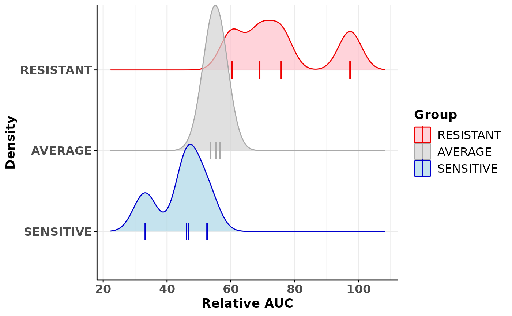

R/drugScreening.R
plotDrugAUCDensityCurve.RdThe function generates a density plot using the relative AUC
and the sensitivity class information present in a DrugAUCQuantile"
object. The function uses [ggplot2::ggplot][ggplot2::ggplot()] function and
returns a "ggplot" object. The density plot can be split by
sensitivity classes.
plotDrugAUCDensityCurve(drugQuantile, byGroup = FALSE)an object of class "DrugAUCQuantile" which
contains the sensitive and resistant information for organoids associated
to a specific drug screening.
a logical indicating if the density is split
by group. Default: FALSE.
a ggplot object that represents a density plot of the
AUC according to the drug sensitivity classification(SENSITIVE, AVERAGE,
RESISTANT).
## Load drug screen dataset for 1 drug
data(drugScreening)
## Calculate the extreme organoids for the methotrexate drug screening
## using a quantile of 1/3
results <- getClassOneDrug(drugScreening=drugScreening,
drugName="Methotrexate", study="MEGA-TEST", screenType="TEST-01",
doseType="Averaged", quantile=1/3)
## Create a density plot where drug sensitivy groups are split
densityGraph <- plotDrugAUCDensityCurve(results, byGroup=TRUE)
densityGraph
#> Picking joint bandwidth of 3.58
